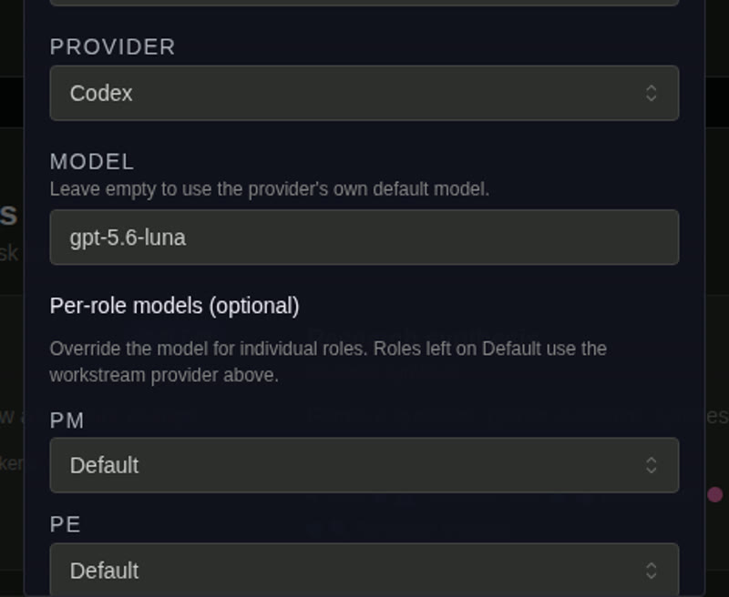
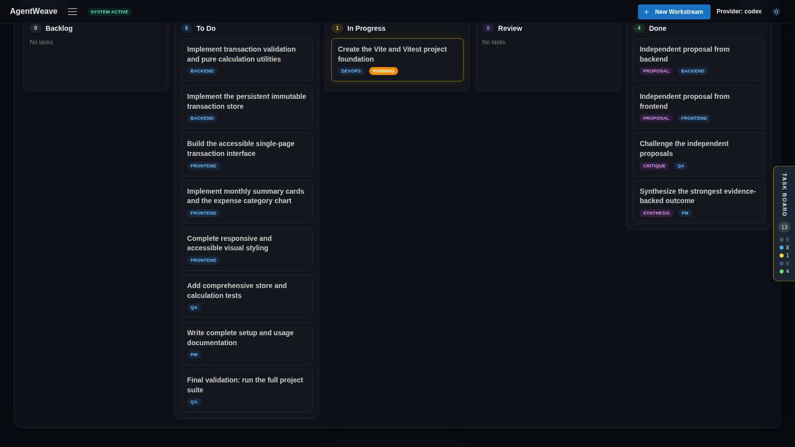
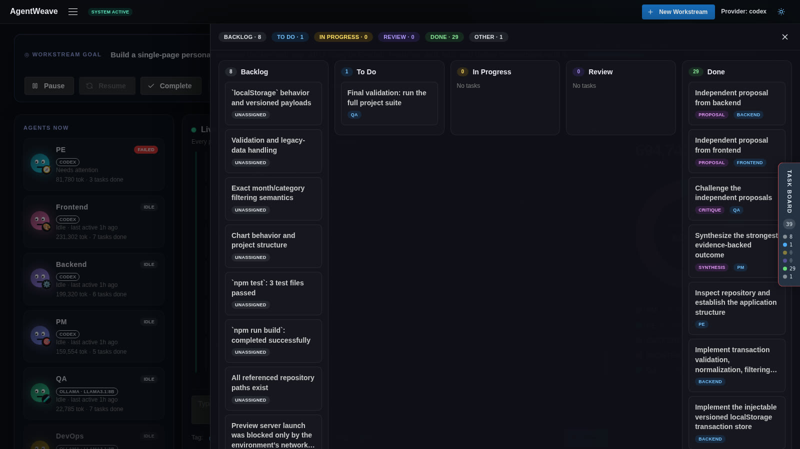
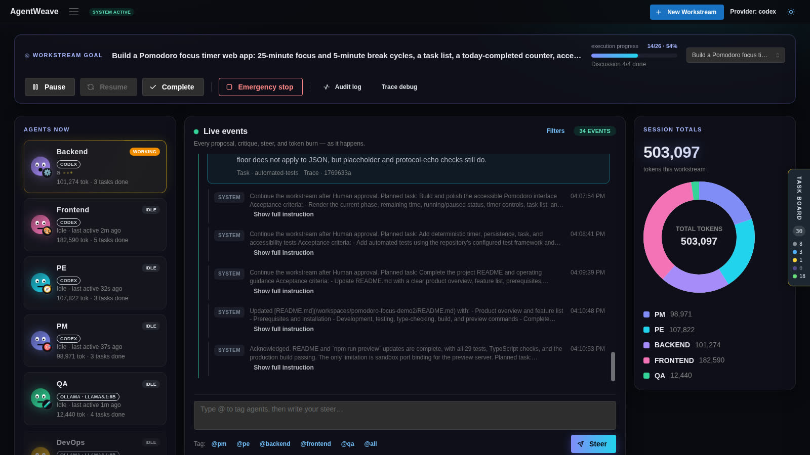

Staff each role with the AI model that fits its responsibilities.
Per-role provider routing: Codex or Claude Code for the hardest turns, Kiro, and local models via Ollama for research and review — with every agent’s usage accounted separately.
Open source · Apache 2.0 Developer preview
Give your AI team a goal. Let agents collaborate, review each other’s work, and bring you in when decisions matter.
Four capabilities, all shipped and running today. Give the team a goal — this is what it does with it.
Per-role provider routing: Codex or Claude Code for the hardest turns, Kiro, and local models via Ollama for research and review — with every agent’s usage accounted separately.
The collaboration protocol is fixed and explicit — propose, critique, synthesize, decompose, execute, review, approve. What emerges is the work itself: the tasks and their dependencies are generated during the run, not pre-wired into a workflow.
Reviewer agents check every artifact against its acceptance criteria, and a deterministic quality gate rejects placeholders and unfinished work before it reaches you.
Approve the plan, steer mid-run, or stop everything with one action — you are the final acceptance authority. Work is durable and resumable, so a checkpoint can last minutes or days.
Not staged demos — the founder’s own work. AgentWeave is built with AgentWeave, and so is his podcast.
Case 01 · Software
A single-page Pomodoro focus timer web app: a large, clear countdown with 25-minute focus sessions and 5-minute breaks, start/pause/reset controls, automatic focus/break switching, a completed-session counter, and daily history kept in the browser — with automated tests and a README.
Six agents — PM, PE, frontend, backend, devops, QA — proposed approaches independently, critiqued each other, and synthesized one plan. The plan became 20 tasks, executed in parallel and validated by an automated test suite: 770,485 tokens, accounted per agent.
Approved the plan before execution, and accepted the delivery at the final gate. Nothing counted as shipped until a person judged it.
Every frame below was captured during real runs on the current build — a Pomodoro focus timer, built end to end by a team like the one on this page. Scroll sideways.

One default engine for the whole team, then per-role overrides right in the create form: planning and implementation on Codex, QA and DevOps on a local model — Ollama, Llama 3.1 8B. Usage is accounted per model.

Backend and Frontend write independent proposals, QA challenges them, and the PM synthesizes one plan. The task graph is generated from that discussion at runtime — it is not a fixed pipeline.

Work crosses the board through five lanes that are always visible — Backlog, To Do, In Progress, Review, Done. Review is done by a different role on a different model, and failed checks send work back with reasons.

Execution pauses at approval gates and waits. Plans, risky steps, and final completion all need the operator's decision before anything proceeds — the run does not ship itself.
Tip: the gallery scrolls horizontally.
Case 02 · Content — beyond code
Produce an episode of the Mirror 122° podcast — “How I Use Muse” — as a complete pre-production package.
A showrunner, researcher, host, and editor — staffed with different models: Codex for the host’s hardest turns, a local model via Ollama for research and editing. The package: topic brief, research pack, full recording script, title options, show notes, and a publishing checklist — every artifact reviewed by the editor before delivery.
Approved the plan, and accepted the package at the final gate — the same two checkpoints as the software case.
Powerful models, used one chat at a time, make you the coordinator, the reviewer, and the session manager. AgentWeave hands those jobs to the team.
Seven fixed stages carry every run — the protocol never changes. What changes is the work: the task graph inside those stages is generated as the team reasons, and validation and approval are built into the path.
Agents form distinct approaches.
Agents challenge gaps and assumptions.
The strongest ideas become one direction.
The direction becomes structured tasks.
Specialists work at the same time.
Results are checked before delivery.
A person approves at the gate.
The long-term, goal-driven vision — kept in its own section on purpose. Everything above is current, working functionality. Everything below is direction, not a promise.
Today the loop has a fixed shape. The direction: a team that adjusts how it collaborates to the work itself — more debate where the risk is, less where it isn’t.
Give the team a goal that lasts. It plans across days, picks up new work as the goal evolves, and reports progress against it — not just task by task.
Review outcomes become memory: the team gets measurably better at working together, run after run.
Build with a team of agents
Built for solo founders and small teams. Let AgentWeave coordinate the proposals, decisions, tasks, execution, and validation in between.
Developer preview · Bring your own providers — Codex, Claude Code, Kiro, or local models via Ollama.